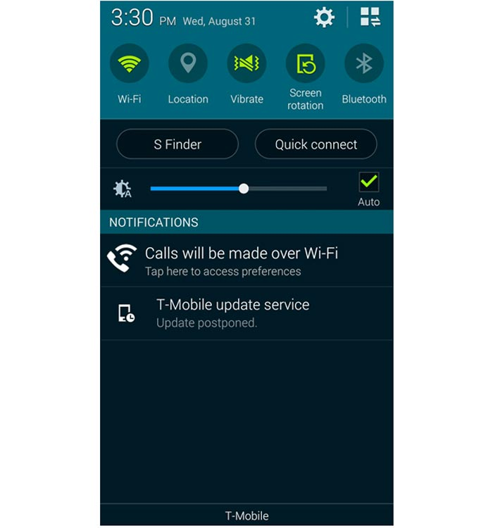
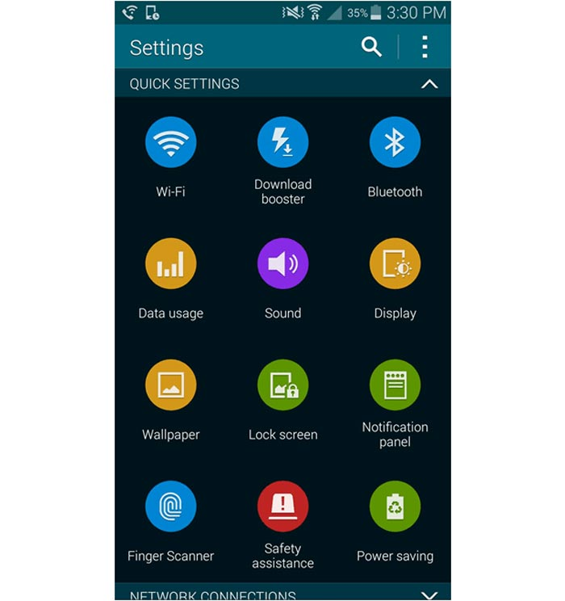
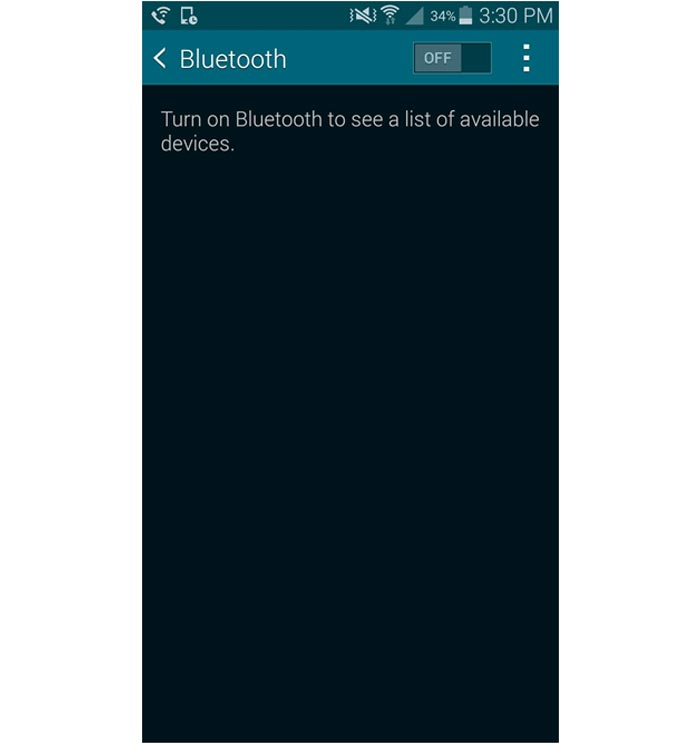
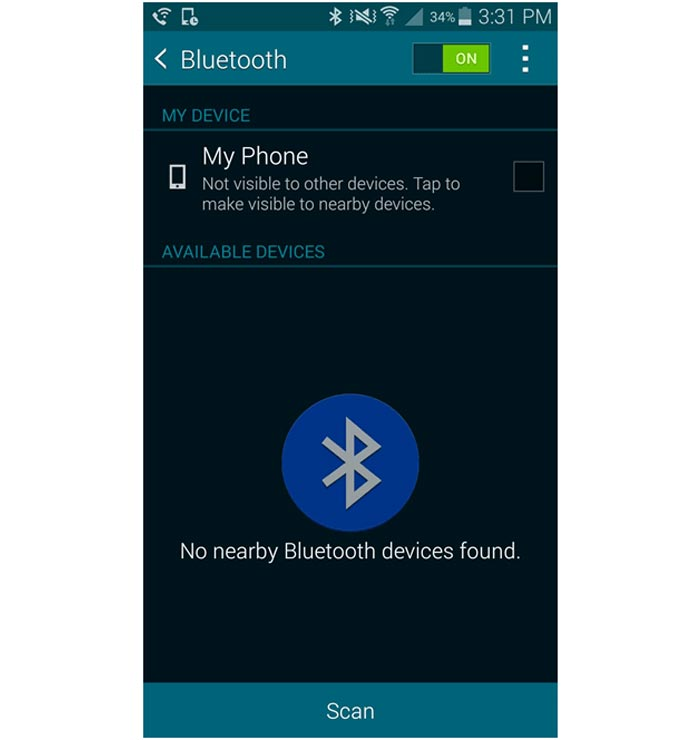
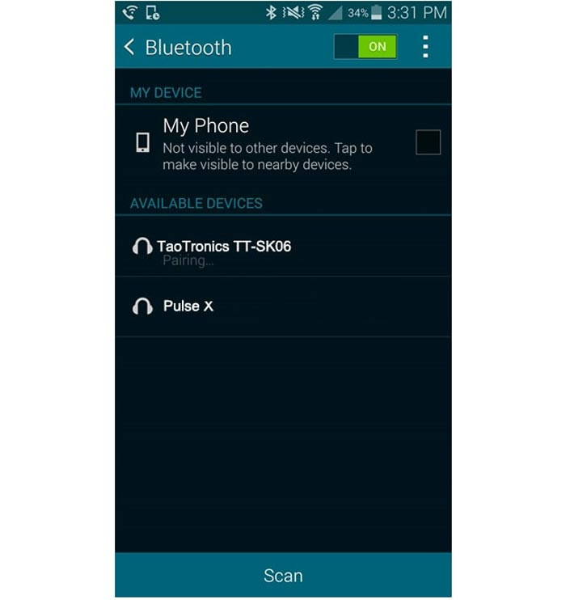
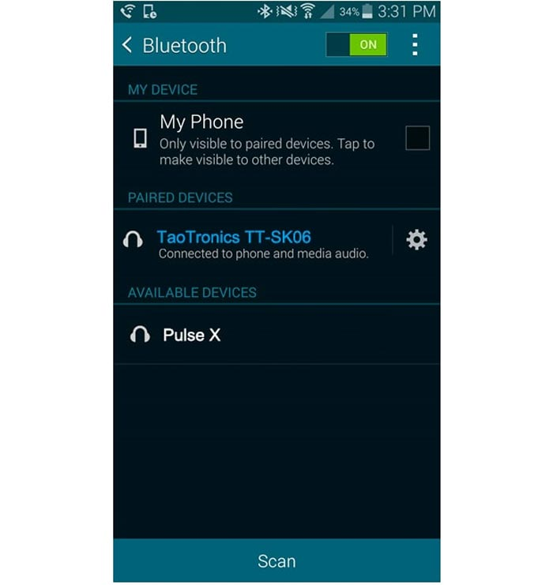

Pair & Connect Your TaoTronics Speaker with Your SamsungSmartphone
Step 1: Drag down the notification bar from the top of your screen. Next. tap the Settings icon (located on the top right of the notification bar). This will take you to the Settings page.

Step 2: On the Settings page. tap Bluetooth.

Step 3: Check that the Bluetooth on your device is turned on. If not. slide the Bluetooth switch from Off to On (located on the top right of the Bluetooth page).

Step 4: Now. turn on your TaoTronics Speaker. Take TaoTronics TT-SK06 as an example. The Bluetooth LED Light will flash blue quickly to indicate that the speaker is in pairing mode. If solid blue. your speaker is already paired to a source device; you will need to press and hold the multi-functional button (or Bluetooth Button) on your TaoTronics Speaker for 1 seconds until your speaker is in pairing mode, ready to pair and connect.Next . hit Scan on your device (located on the bottom of the Bluetooth page).

Step 5: TYour TaoTronics Speaker should now appear under AVAILABLE DEVICES. Next. tap on your TaoTronics Speaker. Please wait patiently as your phone pairs and connects with your speaker.

Step 6: Once paired. you will see the phrase "Connected to phone and media audio" under the listing of your TaoTronics Speaker. You can now play audio wirelessly to your TaoTronics Speaker.
